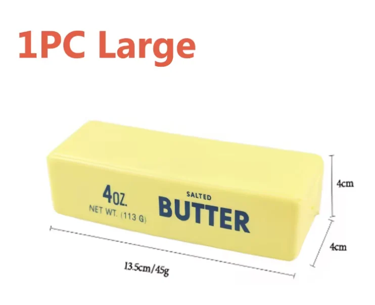
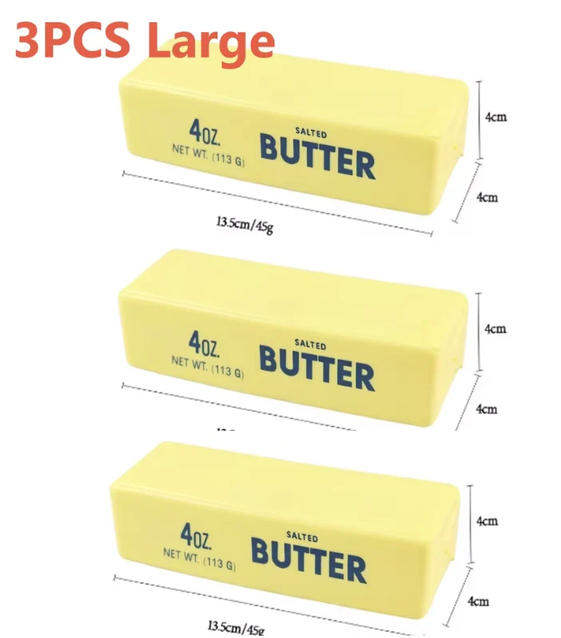
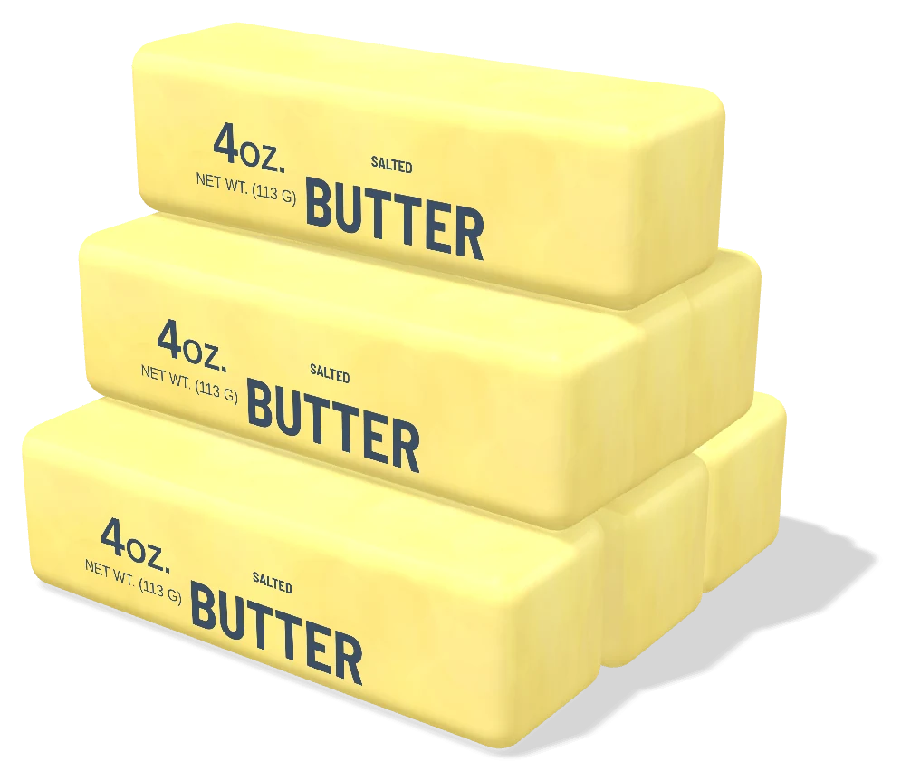

<title>Butter Squish Pages</title>
<meta name="description" content="Ten interactive product page layouts for a slow-rise butter-stick squeeze toy, with the research and photo decisions behind them.">
<link rel="preconnect" href="https://fonts.googleapis.com">
<link rel="preconnect" href="https://fonts.gstatic.com" crossorigin>
<link href="https://fonts.googleapis.com/css2?family=Barlow+Semi+Condensed:wght@500;600;700&family=Public+Sans:wght@400;500;600;700&display=swap" rel="stylesheet">
<style>
:root{
  color-scheme:light;
  --bg:#fbf6e3;--card:#fffdf4;--ink:#1f2a38;--navy:#374a62;--mute:#6b7280;--line:rgba(55,74,98,.16);--butter:#f2e792;--soft:#f4ecc6;--ok:#3c7d4b;--no:#b5452f;--maybe:#a87a12;
  --kit-bg:#fffdf4;--kit-fg:#1f2a38;--kit-muted:#6b7280;--kit-accent:#374a62;--kit-accent-fg:#fbf6e3;--kit-line:rgba(55,74,98,.16);--kit-radius:8px;--kit-font:"Public Sans",sans-serif;--kit-scrim:rgba(31,42,56,.25);
}
@media (prefers-color-scheme:dark){
  :root:not([data-theme="light"]){
    color-scheme:dark;
    --bg:#15181d;--card:#1c2027;--ink:#efe9d2;--navy:#c9d4e2;--mute:#9aa1ab;--line:rgba(239,233,210,.13);--soft:#2a2a20;--ok:#7cc18b;--no:#ec8a73;--maybe:#e2bd5a;
    --kit-bg:#1c2027;--kit-fg:#efe9d2;--kit-muted:#9aa1ab;--kit-accent:#efe9d2;--kit-accent-fg:#15181d;--kit-line:rgba(239,233,210,.13);
  }
}
:root[data-theme="dark"]{
  color-scheme:dark;
  --bg:#15181d;--card:#1c2027;--ink:#efe9d2;--navy:#c9d4e2;--mute:#9aa1ab;--line:rgba(239,233,210,.13);--soft:#2a2a20;--ok:#7cc18b;--no:#ec8a73;--maybe:#e2bd5a;
  --kit-bg:#1c2027;--kit-fg:#efe9d2;--kit-muted:#9aa1ab;--kit-accent:#efe9d2;--kit-accent-fg:#15181d;--kit-line:rgba(239,233,210,.13);
}
*{box-sizing:border-box}
body{margin:0;background:var(--bg);color:var(--ink);font-family:"Public Sans",system-ui,sans-serif;font-size:16px;line-height:1.6;overflow-x:hidden}
img{max-width:100%;height:auto;display:block}
a{color:inherit}
button{font:inherit;color:inherit}
.wrap{width:min(1280px,100% - 32px);margin-inline:auto}
.disp{font-family:"Barlow Semi Condensed",sans-serif}

.top{border-bottom:1px solid var(--line)}
.top .wrap{display:flex;align-items:center;gap:14px;height:62px}
.brand{font-family:"Barlow Semi Condensed";font-weight:700;font-size:21px;text-decoration:none;display:flex;gap:8px;align-items:baseline}
.brand span{font-family:"Public Sans";font-weight:500;font-size:14px;color:var(--mute)}
.top .sp{margin-left:auto;display:flex;gap:8px}
.chip{appearance:none;border:1px solid var(--line);background:var(--card);border-radius:99px;height:38px;padding:0 14px;display:inline-flex;align-items:center;gap:8px;cursor:pointer;font-weight:600;font-size:14px}
.chip:hover{border-color:var(--ink)}
.chip svg{width:16px;height:16px}

.intro{display:grid;grid-template-columns:1.15fr 1fr;gap:56px;align-items:center;padding:64px 0 52px}
.eyebrow{font-size:13px;font-weight:600;letter-spacing:.12em;text-transform:uppercase;color:var(--mute);margin:0 0 16px}
h1{font-family:"Barlow Semi Condensed";font-weight:700;font-size:clamp(46px,6.6vw,96px);line-height:.95;letter-spacing:-.01em;margin:0 0 22px;color:var(--navy)}
.lede{margin:0;max-width:60ch;color:var(--mute);font-size:17px}
.lede b{color:var(--ink);font-weight:600}
.src{margin:0;background:var(--card);border:1px solid var(--line);border-radius:18px;padding:16px}
.seg{display:flex;border:1px solid var(--line);border-radius:99px;padding:3px;width:max-content;max-width:100%;margin-bottom:12px}
.seg button{appearance:none;border:0;background:none;border-radius:99px;padding:6px 14px;cursor:pointer;font-size:13px;font-weight:600;color:var(--mute)}
.seg button[aria-pressed="true"]{background:var(--ink);color:var(--bg)}
.pic{position:relative;aspect-ratio:742/604;border-radius:10px;overflow:hidden;background:#fff}
.pic img{position:absolute;inset:0;width:100%;height:100%;object-fit:contain;opacity:0;transition:opacity .45s ease}
.pic img.on{opacity:1}
.pic img.pad{padding:10% 6%}
.src figcaption{font-size:14px;color:var(--mute);margin-top:12px;min-height:3.2em}
.src figcaption b{color:var(--ink)}

.strip{display:grid;grid-template-columns:repeat(4,1fr);border-block:1px solid var(--line)}
.strip div{padding:20px 20px 20px 0}
.strip div+div{padding-left:20px;border-left:1px solid var(--line)}
.strip b{display:block;font-family:"Barlow Semi Condensed";font-size:44px;line-height:1;font-weight:700;color:var(--navy)}
.strip span{font-size:14px;color:var(--mute)}

.h2{font-family:"Barlow Semi Condensed";font-weight:700;font-size:clamp(32px,3.6vw,48px);line-height:1;margin:0 0 8px;color:var(--navy)}
.sub{color:var(--mute);margin:0 0 28px;max-width:70ch}
.gal{padding:72px 0 0}
.grid{display:grid;grid-template-columns:1fr 1fr;gap:28px}
.card{display:block;text-decoration:none;background:var(--card);border:1px solid var(--line);border-radius:18px;padding:10px;transition:border-color .25s ease}
.card:hover,.card:focus-visible{border-color:var(--ink);outline:none}
.shot{aspect-ratio:16/10;border-radius:10px;overflow:hidden;background:var(--soft)}
.shot img{width:100%;height:100%;object-fit:cover;object-position:top}
.meta{display:grid;grid-template-columns:auto 1fr;gap:2px 14px;padding:14px 8px 8px}
.no{font-family:"Barlow Semi Condensed";font-weight:600;font-size:18px;color:var(--mute);padding-top:4px}
.meta h3{font-family:"Barlow Semi Condensed";font-weight:700;font-size:30px;line-height:1.1;margin:0}
.meta p{grid-column:2;margin:4px 0 0;color:var(--mute);font-size:15px}
.meta .sig{grid-column:2;margin-top:10px;font-size:13px;display:flex;gap:8px;flex-wrap:wrap;align-items:center}
.meta .sig b{font-weight:600}
.meta .sig span{border:1px solid var(--line);border-radius:99px;padding:2px 9px;color:var(--mute)}

.research{padding:110px 0 0}
.rgrid{display:grid;grid-template-columns:280px 1fr;gap:40px;border-top:2px solid var(--ink);padding-top:18px}
.rgrid aside p{color:var(--mute);font-size:15px;margin:0}
.facts{list-style:none;margin:0;padding:0}
.facts li{display:grid;grid-template-columns:150px 1fr;gap:18px;padding:16px 0;border-bottom:1px solid var(--line)}
.facts li:first-child{padding-top:0}
.facts h3{margin:0;font-size:15px;font-weight:700}
.facts p{margin:0;font-size:15px}
.facts .s{display:block;margin-top:6px;font-size:13px;color:var(--mute)}
.facts .s a{color:var(--mute)}

.judge{padding:90px 0 0}
.jgrid{display:grid;grid-template-columns:repeat(3,1fr);gap:16px}
.j{background:var(--card);border:1px solid var(--line);border-radius:14px;padding:14px;display:flex;flex-direction:column}
.j .im{position:relative;aspect-ratio:16/10;border-radius:8px;background:#fff;overflow:hidden;margin-bottom:12px;display:grid;place-items:center}
.j .im img{position:absolute;inset:0;width:100%;height:100%;object-fit:contain;padding:5%}
.j .im.empty{background:var(--soft);color:var(--mute);font-size:13px;text-align:center;padding:16px}
.verdict{font-size:12px;font-weight:700;letter-spacing:.08em;text-transform:uppercase;display:flex;align-items:center;gap:6px}
.verdict i{width:8px;height:8px;border-radius:50%;background:currentColor}
.v-ok{color:var(--ok)}.v-no{color:var(--no)}.v-maybe{color:var(--maybe)}
.j h3{margin:6px 0 6px;font-size:17px;line-height:1.3}
.j p{margin:0;font-size:14px;color:var(--mute)}
.j p+p{margin-top:8px}
.j a{color:var(--mute)}

.notes{padding:90px 0 0;display:grid;grid-template-columns:repeat(3,1fr);gap:16px}
.note{border-top:2px solid var(--ink);padding-top:14px}
.note h3{margin:0 0 6px;font-size:17px}
.note p{margin:0;font-size:15px;color:var(--mute)}
footer{margin-top:90px;border-top:1px solid var(--line);padding:24px 0 48px;color:var(--mute);font-size:13px}
footer .wrap{display:flex;justify-content:space-between;gap:16px;flex-wrap:wrap}
@media (max-width:960px){
  .intro{grid-template-columns:1fr;gap:32px;padding-top:40px}
  .grid,.jgrid,.notes{grid-template-columns:1fr}
  .rgrid{grid-template-columns:1fr;gap:16px}
  .strip{grid-template-columns:1fr 1fr}.strip div:nth-child(3){padding-left:0;border-left:0}.strip div:nth-child(-n+2){border-bottom:1px solid var(--line)}
  .top .brand span{display:none}
}
@media (max-width:560px){
  .facts li{grid-template-columns:1fr;gap:4px}
  .meta{grid-template-columns:1fr}.meta p,.meta .sig{grid-column:1}
  .seg button{padding:6px 10px}
}
@media (prefers-reduced-motion:reduce){*{transition:none!important}}
</style>

<header class="top"><div class="wrap">
  <a class="brand" href="#top">js.17 <span>/ product page lab</span></a>
  <div class="sp">
    <button class="chip" id="theme" aria-label="Toggle colour theme">Theme</button>
    <button class="chip" data-cart-open aria-label="Open shared cart"><svg><use href="#i-bag"/></svg>Cart <span data-cart-count>0</span></button>
  </div>
</div></header>

<main id="top">
  <section class="wrap intro">
    <div>
      <p class="eyebrow">Product three · squeeze toy · ten layouts</p>
      <h1>Ten ways to sell a stick of butter you can't eat.</h1>
      <p class="lede">A <b>slow-rise squeeze toy</b> shaped like a stick of salted butter. The supplier sent two cluttered photos, so this round started with <b>research</b>: what the toy is, how it behaves, what's safe to claim, and which pictures we're allowed to use. One supplier photo was cleaned up; everything else is rendered from a 3D model built to the listing's measurements. Every page has <b>one</b> interaction, and the motion follows the material: a quick press, then a slow rise with no bounce.</p>
    </div>
    <figure class="src">
      <div class="seg" role="group" aria-label="Image source">
        <button aria-pressed="true" data-k="0">As received</button><button aria-pressed="false" data-k="1">Cleaned</button><button aria-pressed="false" data-k="2">3D model</button>
      </div>
      <div class="pic">
        
        
        
      </div>
      <figcaption id="cap"><b>As received.</b> Low resolution, red "1PC Large" banner, dimension lines drawn across the product.</figcaption>
    </figure>
  </section>

  <div class="wrap strip">
    <div><b>10</b><span>layouts, one signature each</span></div>
    <div><b>1</b><span>supplier photo used, cleaned</span></div>
    <div><b>9</b><span>renders from one 3D model</span></div>
    <div><b>0</b><span>images taken from other sellers</span></div>
  </div>

  <section class="wrap gal" aria-labelledby="g">
    <h2 class="h2" id="g">The layouts</h2>
    <p class="sub">All ten share one cart, so a pack added on one page is still there on the next. Prices and reviews are sample content.</p>
    <div class="grid" id="grid"></div>
  </section>

  <section class="wrap research" aria-labelledby="r">
    <h2 class="h2" id="r">What the research changed</h2>
    <p class="sub">The listing title says "Squishy Elastic Butter Stick Fidget Toy Cheese Stress Relief Prank". Before writing a word of copy, we checked what the thing actually is.</p>
    <div class="rgrid">
      <aside><p>Each finding below turned into copy, a design decision, or something the pages deliberately don't say.</p></aside>
      <ul class="facts">
        <li><h3>What it is</h3><p>A slow-rise squeeze toy in TPR (thermoplastic rubber): solid and slightly tacky, not a foam squishy. It copies the butter-stick toys that went viral in 2024–25; the common size is 13.5 cm, which matches this listing.
          <span class="s">Sources: <a href="https://6abc.com/post/inside-viral-squeezy-toy-trend-has-everyone-smooshing-sticks-butter-ducks/19468845/" target="_blank" rel="noopener">6abc</a> · <a href="https://learningspace.co.uk/products/large-butter-squishy" target="_blank" rel="noopener">Learning Space</a> · <a href="https://www.aosonline.co.uk/prdctrl-squeezy-butter-13-5cm-pack-of-24-toy13918obcdu-gem39180-36ed1a0b" target="_blank" rel="noopener">AOS (trade listing)</a></span></p></li>
        <li><h3>The name</h3><p>The viral original is sold as "Squeezy" by Sunny Days Entertainment / Schylling. That's another company's brand, so these pages call the product <b>Butter Squish</b> and never use "Squeezy".
          <span class="s">Source: <a href="https://6abc.com/post/inside-viral-squeezy-toy-trend-has-everyone-smooshing-sticks-butter-ducks/19468845/" target="_blank" rel="noopener">6abc</a></span></p></li>
        <li><h3>How it behaves</h3><p>Press it and the dent fills back in over a few seconds. Owners say it splits if folded in half or stretched hard, picks up lint, and goes soft in heat. That became the care copy ("squeeze, don't fold") and the motion rule: a fast press, a slow rise, no bounce.
          <span class="s">Sources: <a href="https://shopsavvy.com/reviews-tldr/butter-stick-stress-ball" target="_blank" rel="noopener">ShopSavvy review summary</a> · <a href="https://www.boozyshop.com/products/squishy-butter-squishy" target="_blank" rel="noopener">Boozyshop listing</a></span></p></li>
        <li><h3>Safety</h3><p>In 2018 the Danish EPA found polyurethane foam squishies giving off DMF, styrene and toluene. TPR is a different material, but no test report came with this listing, so the pages make <b>no "non-toxic" claim</b>. They do say: not food, not for under-3s, stop using it if it tears.
          <span class="s">Sources: <a href="https://theecologist.org/2018/aug/31/hazardous-chemicals-found-popular-toys" target="_blank" rel="noopener">The Ecologist</a> · <a href="https://thenewdaily.com.au/finance/consumer/2018/09/04/squishies-harmful-chemicals/" target="_blank" rel="noopener">The New Daily</a> · <a href="https://en.wikipedia.org/wiki/Squishy" target="_blank" rel="noopener">Wikipedia: Squishy</a></span></p></li>
        <li><h3>"Stress relief"</h3><p>The listing promises anxiety relief. That's a health claim nobody has tested, so the Breathe page calls itself "a minute, not a method" and nothing promises an effect.</p></li>
        <li><h3>Real size</h3><p>A real US stick of butter is about 12.1 × 3.2 × 3.2 cm and weighs 113 g (the "4 oz" on the print). The toy is a little bigger and much lighter: 13.5 × 4 × 4 cm, 45 g. The True Size page overlays one on the other.
          <span class="s">Source: <a href="https://en.wikipedia.org/wiki/Butter" target="_blank" rel="noopener">Wikipedia: Butter</a> (stick formats)</span></p></li>
      </ul>
    </div>
  </section>

  <section class="wrap judge" aria-labelledby="j">
    <h2 class="h2" id="j">Photo judgement</h2>
    <p class="sub">The brief was to find better pictures. Here is what we found, what we used, and why most of it was turned down.</p>
    <div class="jgrid">
      <article class="j"><div class="im"></div>
        <span class="verdict v-ok"><i></i>Used</span><h3>Supplier photo, 1 stick</h3>
        <p>Ours to use: it came with the listing. The red text and dimension lines were removed, the stick cut out and upscaled. It's the "Product photo" on the Shop page and the fallback when 3D isn't available.</p></article>
      <article class="j"><div class="im"></div>
        <span class="verdict v-no"><i></i>Replaced</span><h3>Supplier photo, 3 sticks</h3>
        <p>The sticks are cropped off the edge and the image has a text banner and lines all over it. Replaced with clean 3-pack and 5-pack renders.</p></article>
      <article class="j"><div class="im"></div>
        <span class="verdict v-ok"><i></i>Made</span><h3>9 renders from a 3D model</h3>
        <p>Built to 13.5 × 4 × 4 cm, with the colour and label matched to the supplier photo. Gives every page clean, consistent angles: front, top, end, pressed, packs. Every page labels them as renders.</p></article>
      <article class="j"><div class="im empty">Other shops' product photos</div>
        <span class="verdict v-no"><i></i>Rejected</span><h3>Other sellers' listings</h3>
        <p>Boozyshop, Walmart, TikTok Shop, Vat19 and others have nicer photos, but they're those sellers' copyright, often show a different product, and some show the "Squeezy" brand.</p></article>
      <article class="j"><div class="im empty">iStock · Getty · Adobe Stock</div>
        <span class="verdict v-no"><i></i>Rejected</span><h3>Paid stock</h3>
        <p>Needs a paid licence, and it shows real butter, not the toy. Fine for a mood shot if the client buys a licence; never as a product photo.</p></article>
      <article class="j"><div class="im empty">Not downloaded: this environment blocks image hosts</div>
        <span class="verdict v-maybe"><i></i>Candidates</span><h3>Free-licence real butter</h3>
        <p><a href="https://unsplash.com/de/fotos/ein-stuck-butter-sitzt-auf-einem-holztisch-qTigcoSKke8" target="_blank" rel="noopener">"A stick of butter on a wooden table"</a>, Nathan Dumlao (Unsplash License, free for commercial use). <a href="https://commons.wikimedia.org/wiki/File:Western-pack-butter.jpg" target="_blank" rel="noopener">"Western-pack butter"</a>, Steve Karg (CC BY 2.5, credit required).</p>
        <p>Good for a "spot the fake" comparison next to the toy. Not added yet.</p></article>
    </div>
  </section>

  <section class="wrap notes" aria-label="Notes">
    <div class="note"><h3>One signature per page</h3><p>Press it, cut it, scrub it, lift the lid, squeeze for four, test it, count it, listen, measure it. Nothing else on the page competes: no confetti, no count-ups, no bouncing reveals.</p></div>
    <div class="note"><h3>Motion follows the material</h3><p>One recovery curve drives every page: the press takes about 0.2 s, and most of the dent is gone within 5 s. The timing is our model's, tuned by eye; it isn't a measurement.</p></div>
    <div class="note"><h3>Sample content</h3><p>Prices (1, 3 and 5 sticks at $6.99, $17.99, $26.99), ratings, reviews and delivery dates are placeholders. "Butter Squish" and "softened." are template names.</p></div>
  </section>
</main>

<footer><div class="wrap"><span>js.17 · product page lab · Butter Squish</span><span>Template by js.17 · prices and reviews are sample content · renders built from the supplier photo and measurements</span></div></footer>

<script src="assets/kit.js"></script>
<script>
(function(){
  const $ = s => document.querySelector(s);
  const L = [
    {f:'01-press', n:'Press', d:'A giant headline that squashes with the stick. Press anywhere and the readout shows how deep the dent went and how long it will take to come back.', sig:'Press and hold', ty:'Barlow Semi Condensed · Public Sans'},
    {f:'02-wrapper', n:'Wrapper', d:'The page is the wax-paper wrapper. Eight tablespoon marks sit over the stick; pick one and a knife line presses into it while that section opens.', sig:'Tablespoon marks', ty:'Zilla Slab · Barlow'},
    {f:'03-slow-rise', n:'Slow Rise', d:'Scroll to press, keep scrolling to scrub time. A seconds ruler and soft-axis type show the dent filling back in, frame by frame.', sig:'Scroll-scrubbed time', ty:'Fraunces · Mulish'},
    {f:'04-prank', n:'Butter Dish', d:'The stick sits in a ceramic dish under a glass lid. Lift the lid, press the butter, get the punchline. With the rules for a kind prank.', sig:'Lift the lid', ty:'Gloock · Hanken Grotesk'},
    {f:'05-shop', n:'Shop', d:'A straight storefront: the cleaned photo, renders, a 3D view you can turn and squish, pack picker, care and safety answers.', sig:'3D tab in the gallery', ty:'Albert Sans'},
    {f:'06-breathe', n:'Breathe', d:'Hold to squeeze for four counts, let go, and the ring empties as the butter rises. A quiet page that makes no health claims.', sig:'Hold, let go, watch', ty:'Newsreader · Karla'},
    {f:'07-rise-lab', n:'Rise Lab', d:'A bench report. A steel probe presses light, medium or firm; the chart plots the dent coming back and logs each run. Clearly marked as simulated.', sig:'Probe test + live chart', ty:'IBM Plex Sans · Mono'},
    {f:'08-five-pack', n:'Five-Pack', d:'Swiss-grid page for classrooms and offices. Say how many people and it works out the cheapest mix of packs, stick by stick.', sig:'Pack calculator', ty:'Archivo'},
    {f:'09-asmr', n:'Listen', d:'Dark close-ups played on the live model, with captions and soft generated sound (off to start). The punchline: the real toy is silent.', sig:'Captioned close-ups', ty:'Libre Caslon · Atkinson Hyperlegible'},
    {f:'10-true-size', n:'True Size', d:'Calibrate your screen with a bank card, then see the stick at exactly 13.5 cm, with a blueprint and a real stick of butter for comparison.', sig:'Card calibration', ty:'Red Hat Display · Mono'}
  ];
  $('#grid').innerHTML = L.map((l, i) => `
    <a class="card" href="pages/${l.f}.html">
      <div class="shot"></div>
      <div class="meta"><span class="no">${String(i + 1).padStart(2, '0')}</span><h3>${l.n}</h3><p>${l.d}</p>
        <div class="sig"><b>Signature:</b> ${l.sig}<span>${l.ty}</span></div></div>
    </a>`).join('');

  /* source toggle */
  const caps = [
    '<b>As received.</b> Low resolution, red "1PC Large" banner, dimension lines drawn across the product.',
    '<b>Cleaned.</b> Text and lines removed, stick cut out and upscaled 2×. Used as the product photo.',
    '<b>3D model.</b> Built to 13.5 × 4 × 4 cm, colour sampled from the photo. Squishable on every page.'
  ];
  const imgs = document.querySelectorAll('.pic img');
  document.querySelectorAll('.seg button').forEach(b => b.addEventListener('click', () => {
    const k = +b.dataset.k;
    document.querySelectorAll('.seg button').forEach(x => x.setAttribute('aria-pressed', x === b));
    imgs.forEach((im, j) => im.classList.toggle('on', j === k)); $('#cap').innerHTML = caps[k];
  }));

  /* theme toggle (remembered per viewer) */
  const root = document.documentElement;
  try { const t = localStorage.getItem('js17-lab-theme'); if (t) root.setAttribute('data-theme', t); } catch(e){}
  $('#theme').addEventListener('click', () => {
    const dark = root.getAttribute('data-theme') ? root.getAttribute('data-theme') === 'dark' : matchMedia('(prefers-color-scheme: dark)').matches;
    const t = dark ? 'light' : 'dark'; root.setAttribute('data-theme', t);
    try { localStorage.setItem('js17-lab-theme', t); } catch(e){}
  });
})();
</script>
